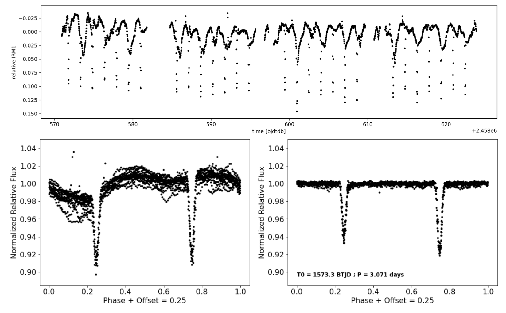
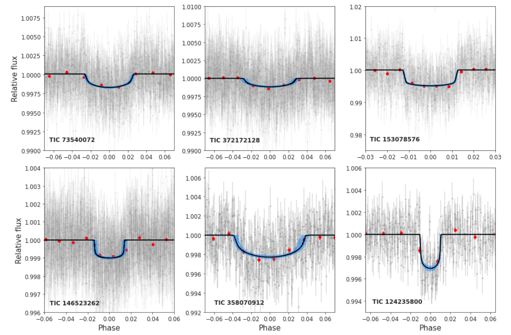
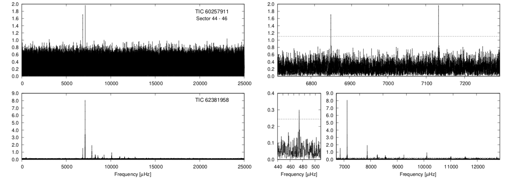

Welcome TESS followers to our latest news bulletin! This week, we are looking at three recent papers from the archive. Enjoy!
A Low-Mass Pre-Main-Sequence Eclipsing Binary in Lower Centaurus Crux Discovered with TESS (Stassun et al. 2022) :
Eclipsing binary stars are key laboratories for testing theoretical models of stellar evolution. Pre-main-sequence systems are particularly crucial as they can be considerably affected by strong surface magnetic fields, highlighting the importance of comprehensive treatment of the latter in evolutionary models. Stassun et al. (2022) present the discovery and detailed analysis of the pre-main-sequence eclipsing binary 2M1222−57. The authors combine TESS photometry with radial velocity from CTIO/CHIRON, speckle imaging from Gemini/Zorro, Gaia, 2MASS and WISE data to discover the system and constrain its physical parameters. 2M1222−57 is a 16.2±2.2 Myr system in Lower Centaurus Crux consisting of two M dwarfs orbiting each other every 3.07 days on a nearly circular orbit. Stassun et al. (2022) found evidence of a circumbinary disk, observed H-alpha emission variations synchronized with the orbital period of the binary, and detected a low-mass (~0.2MSun) tertiary companion at a projected separation of about 100 AU. The TESS data helped the authors achieve ~1% precision on the measured stellar masses and sizes -- among the highest for pre-main-sequence eclipsing binaries.
A systematic validation of hot Neptunes in TESS data (Magliano et al. 2022) :
Hot Neptunes are a class of exoplanets with an orbital period shorter than about 4 days and a radius similar to Neptune's. Recent studies have found an intriguing scarcity of such planets -- a "Hot Neptune Desert" -- compared to the much more common Jovian and small rocky exoplanets. Magliano et al. (2022) present the detailed analysis and statistical validation of 250 TESS exoplanet candidates with orbital periods shorter than 4 days and radii between 3 and 5 REarth. The authors use the DAVE vetting pipeline to mark 62 targets as bona-fide planet candidates and the TRICERATOPS validation pipeline to select 18 of the 62 as likely genuine planets, 9 of which have already been confirmed. For the nine remaining validated candidates, Magliano et al. (2022) determine the stellar parameters through spectral energy distribution modeling, perform detailed transit fits, and the utilize archival follow-up observations from SOAR, Gemini, Lick, WYIN and FLWO for the comprehensive analysis of the systems. The authors calculate the corresponding transit spectroscopy metrics and note that two of the candidates -- TOI-277 b and TOI-1288 b -- are excellent targets for atmospheric characterization through transit spectroscopy. Thanks to TESS, these new validated exoplanets and planet candidates expand the known hot Neptune population, suggesting additional studies and high-priority targets for further research towards understanding their origins.
Short-period pulsating hot-subdwarf stars observed by TESS I. Southern ecliptic hemisphere (Baran et al. 2022) :
Hot sub-dwarfs are a diverse set of compact evolved stars divided into two general classes -- sub-dwarfs of spectral type O (sdO) and sub-dwarfs of spectral type B (sdB). The former have effective temperatures in the range 40,000-80,000 K and surface gravities of 4-6.6 log (g/cm3), whereas the latter are cooler (20,000-40,000 K) and cover a narrower range in log (g/cm3) from 5 to 6. Both types can exhibit rapid oscillations that provide deeper understanding of their stellar interiors and evolutionary histories. Baran et al. (2022) present a detailed analysis of short-period oscillations in hot sub-dwarfs observed by TESS in Years 1 and 3. The authors utilize the 20-sec and the 120-sec short-cadence TESS photometry, and spectroscopic data to detect, classify and study pulsations in 43 hot sub-dwarfs. Of these, Baran et al. (2022) identify 32 sdB stars, 2 sdO stars, 8 sdOB stars, and one He-sdOB. The authors note that eight of these are hybrid pulsators and the He-sdOB star is the first that exhibits short-period pulsations. Pulsating sdO stars, in particular, are exceedingly rare and TESS provides an excellent opportunity to expand their numbers.
 Fig. 1: Taken from Stassun et al. (2022). Upper panel: TESS long-cadence from Sectors 11 and 12 used to discover the pre-main-sequence eclipsing binary 2M1222−57. Lower left panel: phase-folded light curve on a period of 3.071 days. Lower right panel: same as lower left after the removal of the prominent out-of-eclipse modulations.
 Fig. 2: Taken from Magliano et al. (2022). Phase-folded TESS light curves (grey symbols) and corresponding transit fits (black lines) for six hot Neptunes studied in this work. The red symbols represent the binned data and the blue shaded regions represent the 68% significance interval.
 Fig. 3: Taken from Baran et. al. (2022). Left panels: Amplitude as a function of frequency for two hot subd-warfs observed by TESS in 20-sec cadence, TIC 60257911 and TIC 62381958. Right panels: Same as left panels but zoomed in on the detected frequencies.